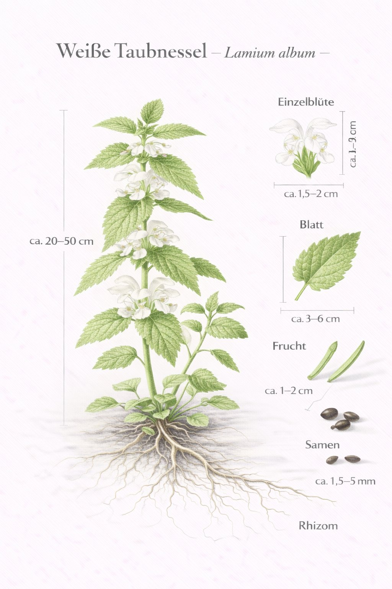
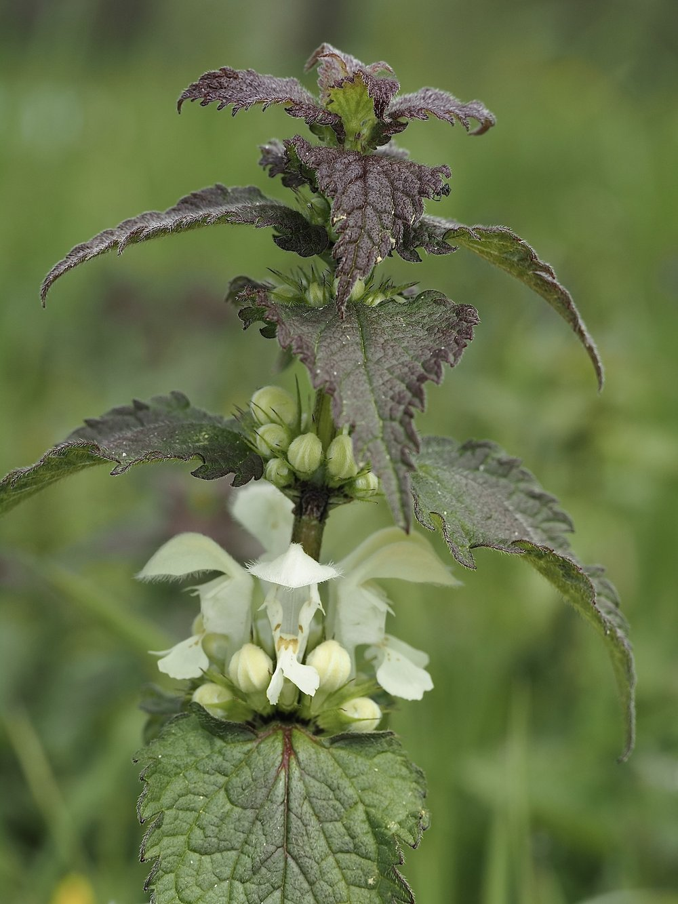

Weiße Taubnessel


Die harmlose Doppelgängerin
Wer die Weiße Taubnessel nicht kennt, meidet sie – weil sie so erschreckend der Brennnessel ähnelt. Dieselbe Blattform, derselbe gezähnte Rand, derselbe aufrechte Wuchs. Aber: kein Brennen. Die Taubnessel hat keine Brennhaare und ist vollständig harmlos. Das Wort ‚taub' im Namen bedeutet seit dem Mittelalter ‚stumm' oder ‚ohne Wirkung' – also: die Nessel, die nicht brennt. Eine Pflanze, die durch Mimikry geschützt ist, ohne selbst zu brennen.
Das Hummelhotel
Die weissen Lippenblüten der Taubnessel sind für langrüsselige Hummeln wie gemacht: Der Nektar liegt tief im Blütenrohr, nur wer weit genug hineinreicht, kommt ans Ziel. An einem sonnigen Frühlingstag summt eine Taubnesselhecke – das Geräusch der anfliegenden und abfliegenden Hummeln ist hörbar. Ein idealer Beobachtungsplatz, der keine seltene Art erfordert.